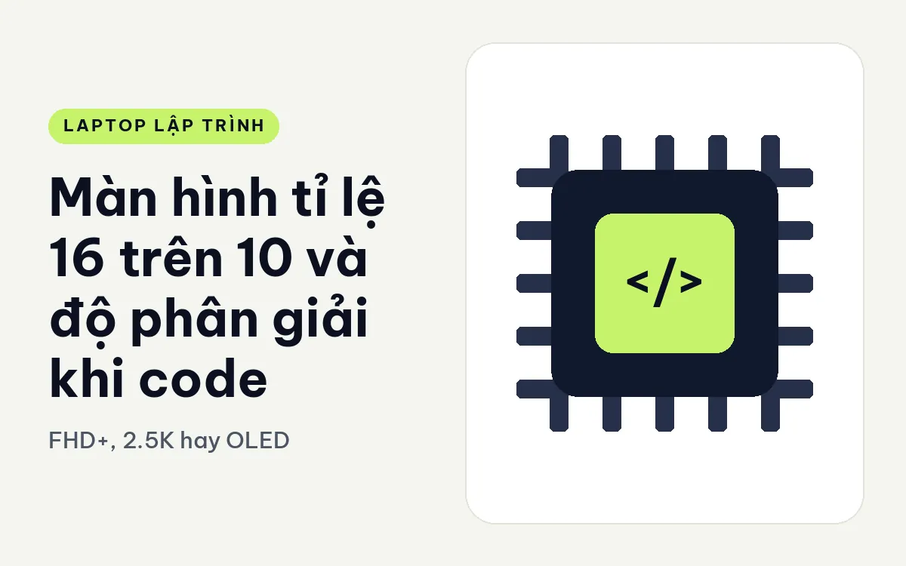
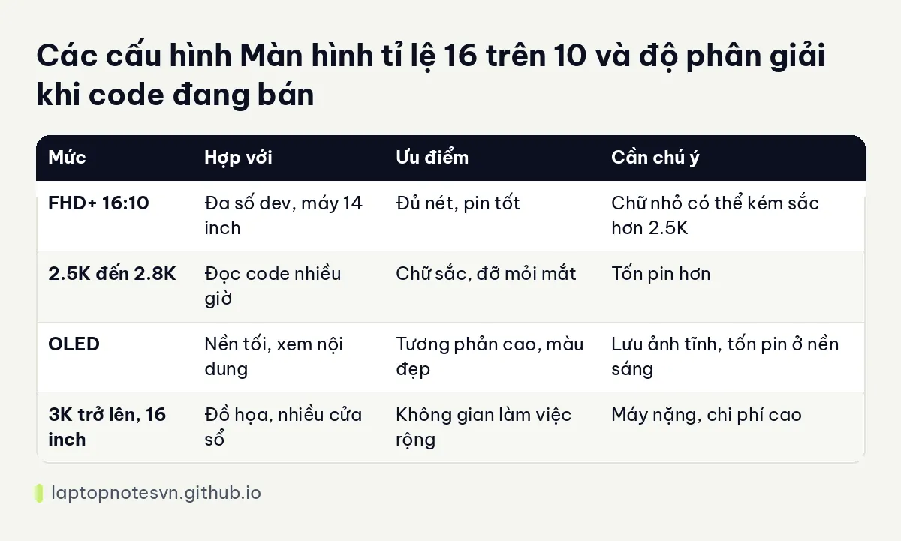

Màn hình tỉ lệ 16 trên 10 và độ phân giải khi code - FHD+, 2.5K hay OLED

Dev nhìn màn hình tám đến mười tiếng mỗi ngày, nên màn hình quan trọng không kém CPU. Hai yếu tố hay bị bỏ qua là tỉ lệ khung hình và độ phân giải. Cùng kích thước 14 inch, một màn 16:10 cho bạn thêm vài dòng code trên mỗi màn so với 16:9, và độ phân giải cao hơn làm chữ sắc nét, đỡ mỏi mắt khi đọc lâu.
Bài này nói về tỉ lệ, độ phân giải, tấm nền và các lưu ý để bảo vệ mắt, rồi áp vào máy đang bán. Tôi không đưa số đo độ chính xác màu, vì chỉ thông số hãng công bố mới đáng tin để đối chiếu.
Vì sao 16:10 hợp với người viết code
Tỉ lệ 16:10 cao hơn 16:9 một chút. Với cùng chiều rộng, màn 16:10 hiển thị nhiều dòng hơn, rất đáng giá khi bạn đọc file dài, xem log hoặc mở trình soạn thảo cạnh trình duyệt. Chênh lệch nghe nhỏ nhưng khi dùng hằng ngày, việc cuộn ít đi giúp bạn giữ mạch đọc tốt hơn.
Màn tỉ lệ này cũng thoải mái cho tài liệu, bảng tính và thiết kế giao diện, vì giống tờ giấy hơn. Ngày nay đa số laptop doanh nghiệp tầm trung trở lên đã chuyển sang 16:10, nên bạn dễ tìm máy phù hợp.
Độ phân giải nên chọn
FHD+ (1920 x 1200) là mức nền tốt cho màn 14 inch. Chữ đủ nét, pin tiết kiệm hơn các mức cao, giá máy dễ chịu. Với nhiều dev, đây là mức đủ dùng suốt nhiều năm.
Mức 2.5K và 2.8K cho chữ sắc hơn rõ rệt, nhất là khi bạn đọc code cỡ chữ nhỏ trong nhiều giờ. Đổi lại, màn hình tốn điện hơn, nên pin ngắn đi một chút. Nếu bạn hay làm việc ở quán cà phê hay trên đường, hãy tính cân bằng này.
Mức 3K trở lên chủ yếu thấy ở máy trạm 16 inch, hợp người làm thiết kế, đồ họa hay cần nhiều không gian màn hình cho nhiều cửa sổ. Với riêng việc code, độ chênh so với 2.5K không còn lớn.
Với màn nhỏ, hãy chú ý hệ điều hành phóng đại giao diện, ví dụ 150 phần trăm. Nếu độ phân giải rất cao mà phóng quá lớn, bạn không thêm được không gian làm việc. Hãy tự thử trên máy thật nếu có thể.
OLED, độ sáng và chống chói
Tấm OLED cho màu đậm, đen sâu và tương phản cao, dễ chịu khi dùng chế độ nền tối mà dev hay chọn. Đổi lại, OLED thường tốn pin hơn khi hiển thị nền sáng, và có vấn đề lưu ảnh tĩnh nếu để cố định một giao diện rất lâu. Bật chế độ nền tối và để màn tự tắt giúp giảm rủi ro này.
Nếu bạn làm việc gần cửa sổ hoặc ngoài trời, độ sáng tối đa và lớp chống chói quan trọng hơn độ phân giải. Một màn 300 nits đủ cho trong nhà, nhưng chỗ nhiều ánh sáng thì cần cao hơn.
Một mẹo cho mắt: giảm độ sáng cho gần với ánh sáng phòng, bật chế độ ánh sáng ấm vào buổi tối, và nghỉ ngắn định kỳ nhìn xa. Phần mềm không thay được thói quen này.
Màn cảm ứng, màn nhám và kích thước
Màn cảm ứng không phải thứ dev cần, nhưng nhiều người thấy tiện khi lướt tài liệu hoặc ký tên. Đổi lại, màn cảm ứng thường bóng hơn và dễ bám vân tay, phản chiếu nhiều hơn màn nhám. Nếu bạn làm việc gần cửa sổ, màn nhám thường dễ chịu hơn.
Về kích thước, 14 inch là điểm cân bằng cho người di chuyển. 16 inch cho nhiều không gian hơn nhưng máy nặng hơn, thường trên 2 kg. Màn 13 inch rất gọn, nhưng nếu bạn hay mở IDE cạnh trình duyệt thì sẽ thấy chật, và khi đó cắm thêm màn ngoài ở bàn làm việc là giải pháp thực tế.
Bảng đối chiếu nhanh

| Mức | Hợp với | Ưu điểm | Cần chú ý |
|---|---|---|---|
| FHD+ 16:10 | Đa số dev, máy 14 inch | Đủ nét, pin tốt | Chữ nhỏ có thể kém sắc hơn 2.5K |
| 2.5K đến 2.8K | Đọc code nhiều giờ | Chữ sắc, đỡ mỏi mắt | Tốn pin hơn |
| OLED | Nền tối, xem nội dung | Tương phản cao, màu đẹp | Lưu ảnh tĩnh, tốn pin ở nền sáng |
| 3K trở lên, 16 inch | Đồ họa, nhiều cửa sổ | Không gian làm việc rộng | Máy nặng, chi phí cao |
Máy nào đang đáp ứng điều này
DELL Pro 14 PC14250 (2025) dùng màn FHD+ tỉ lệ 16:10, nặng 1,35 kg. Đây là mức nền chất lượng tốt, hợp người cần máy gọn và chủ yếu làm việc trong nhà.
Bản đánh giá riêng của dòng này nằm trong bài Dell Pro 14 cho lập trình, nhắc cả chuyện màn hình lẫn bàn phím.
DELL XPS 13 DX13260 (2026) có màn 13,4 inch 2.5K cảm ứng, máy nặng khoảng 0,9 kg. Màn nhỏ nhưng nét, hợp người hay di chuyển. Hãy cân nhắc kích thước nhỏ nếu bạn cần mở nhiều cửa sổ cạnh nhau.
Lenovo ThinkPad X1 Carbon Gen 14 | Aura Edition (2026) dùng màn 14 inch 2.8K OLED, máy dưới 1 kg. Phù hợp người dùng nền tối, cần chữ sắc và máy nhẹ.
Về pin và các lưu ý của kiểu máy mỏng, bài pin và sạc laptop dev đi làm sẽ hữu ích.
Nếu bạn quan tâm cả bàn phím, thứ chạm vào tay nhiều như màn hình chạm vào mắt, bài bàn phím laptop gõ code cả ngày nói riêng về chuyện này.
Đăng ngày 09/11/2026